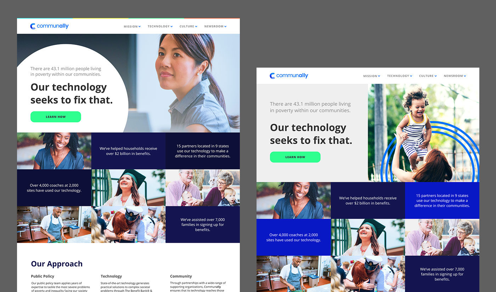
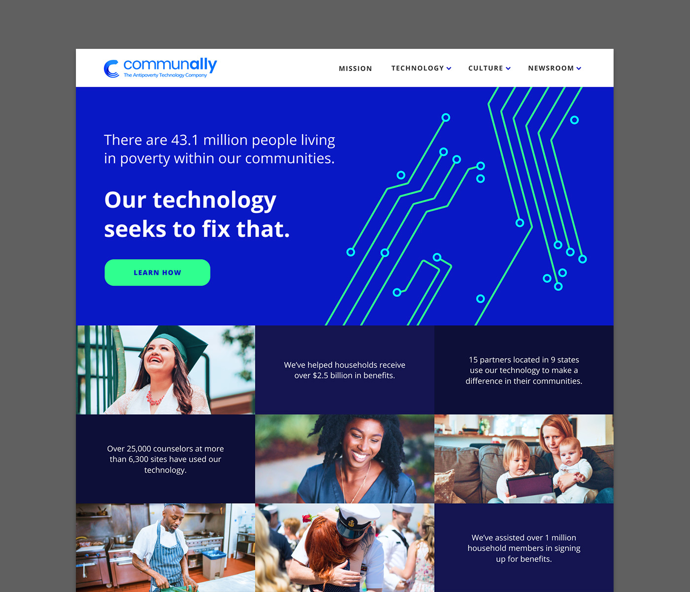
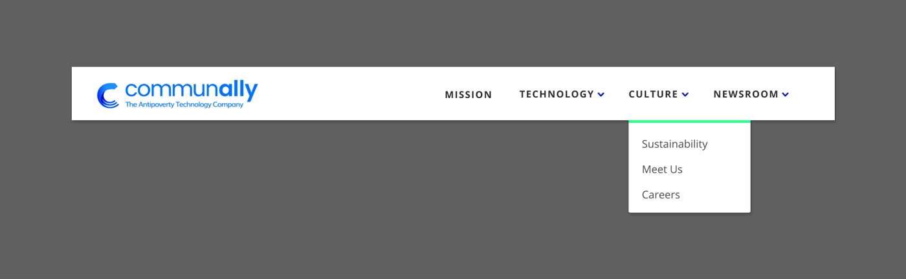

Communally, the antipoverty technology company, underwent a rebrand in the summer of 2017. Once the company name and logo were chosen, our team was tasked with creating a new website under a tight deadline.
Message Agency of Philadelphia designed our new logo and provided us with a fresh color palette. With a little over a month before the scheduled launch, I used the provided brand guidelines to create a few possible paths we could go down and presented them to the team.
The first (of many) attempts at nailing down a specific style
Exploring the direction I wanted to take the top half of the homepage
Behold, the chosen one
Our winner emerged. It was equally community and tech-focused, exactly what Communally needed. I chose to include a few company stats such as how many people we'd helped and where our partners are located, in order to build trust with potential partners and investors.
I ran with the circuit board motif, using a simplified version for CTAs and headers around the site. Images of people representing communities we assisted are also featured prominently.
I created a set of custom icons for this project. Most appear on the careers page, but you can see a few scattered throughout the rest of the site as well. If given the time, I always prefer to create my own icons, giving my projects a unique touch.
The site at a glance
Focused look at the header
This project was a great opportunity to test my rapid prototyping skills, creating quite a few mockups/style boards quickly in order to test concepts and find ones that work.
I used Figma, a collaborative design tool, to create all of the mockups for this project. It was my first time using Figma, but by the end of the project I was an advocate for the tool, leading the team to adopt it for subsequent interface design projects.